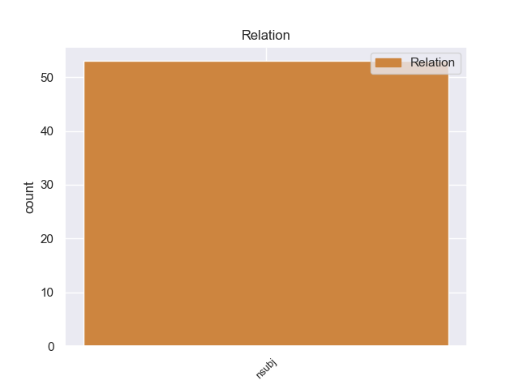
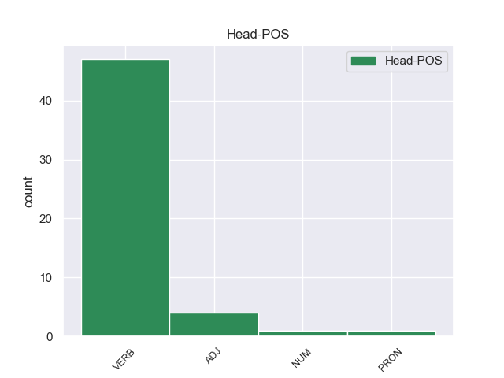
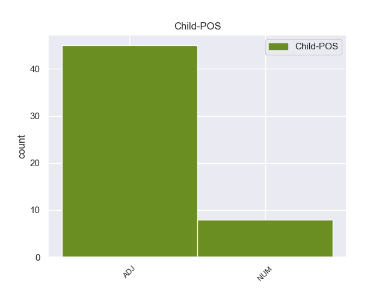

Distribution of features within this leaf



Morphosyntax Rules sorted by frequency.
- When the dependent token is the nominal subject(nsubj) of the head token, and the head token is VERB and the dependent token is ADJ, the Gender needs to be Masc.
1 Είναι _ _ _ _ 0 _ _ _
2 σημαντικό _ _ _ _ 0 _ _ _
3 να _ _ _ _ 0 _ _ _
4 υπογραμμίσω _ _ _ _ 0 _ _ _
5 το _ _ _ _ 0 _ _ _
6 γεγονός _ _ _ _ 0 _ _ _
7 ότι _ _ _ _ 0 _ _ _
8 και _ _ _ _ 0 _ _ _
9 οι _ _ _ _ 0 _ _ _
10 δύο _ _ _ _ 0 _ _ _
11 βουλευτές _ _ _ _ 0 _ _ _
12 διατρανώνουν _ _ _ _ 0 _ _ _
13 σθεναρά _ _ _ _ 0 _ _ _
14 την _ _ _ _ 0 _ _ _
15 αθωότητά _ _ _ _ 0 _ _ _
16 τους _ _ _ _ 0 _ _ _
17 και _ _ _ _ 0 _ _ _
18 καταγγέλλουν _ _ _ _ 0 _ _ _
19 αυτό _ _ _ _ 0 _ _ _
20 που _ _ _ _ 0 _ _ _
21 οι _ _ _ _ 0 _ _ _
22 ίδιοι ίδιος ADJ ADJ Case=Nom|Gender=Masc|Number=Plur 23 nsubj _ _
23 θεωρούν θεωρώ VERB VERB Aspect=Imp|Mood=Ind|Number=Plur|Person=3|Tense=Pres|VerbForm=Fin|Voice=Act 0 _ _ _
24 καταχρήσεις _ _ _ _ 0 _ _ _
25 σ _ _ _ _ 0 _ _ _
26 τη _ _ _ _ 0 _ _ _
27 διαδικασία _ _ _ _ 0 _ _ _
28 δίωξης _ _ _ _ 0 _ _ _
29 . _ _ _ _ 0 _ _ _
1 αυξάνονται _ _ _ _ 0 _ _ _
2 οι _ _ _ _ 0 _ _ _
3 δράσεις _ _ _ _ 0 _ _ _
4 καταστολής _ _ _ _ 0 _ _ _
5 έναντι _ _ _ _ 0 _ _ _
6 των _ _ _ _ 0 _ _ _
7 πολιτών _ _ _ _ 0 _ _ _
8 και _ _ _ _ 0 _ _ _
9 προπαντός _ _ _ _ 0 _ _ _
10 των _ _ _ _ 0 _ _ _
11 φοιτητών _ _ _ _ 0 _ _ _
12 , _ _ _ _ 0 _ _ _
13 δύο δύο NUM NUM Case=Nom|Gender=Masc|Number=Plur|NumType=Card 17 nsubj _ _
14 εκ _ _ _ _ 0 _ _ _
15 των _ _ _ _ 0 _ _ _
16 οποίων _ _ _ _ 0 _ _ _
17 πέθαναν πεθαίνω VERB VERB Aspect=Perf|Mood=Ind|Number=Plur|Person=3|Tense=Past|VerbForm=Fin|Voice=Act 0 _ _ _
18 φυλακισμένοι _ _ _ _ 0 _ _ _
19 σ _ _ _ _ 0 _ _ _
20 την _ _ _ _ 0 _ _ _
21 έρημο _ _ _ _ 0 _ _ _
22 · _ _ _ _ 0 _ _ _
1 Ελλάδα _ _ _ _ 0 _ _ _
2 : _ _ _ _ 0 _ _ _
3 61 61 NUM NUM NumType=Card 0 _ _ _
4 οι _ _ _ _ 0 _ _ _
5 νεκροί νεκρός ADJ ADJ Case=Nom|Gender=Masc|Number=Plur 3 nsubj _ _
6 από _ _ _ _ 0 _ _ _
7 γρίπη _ _ _ _ 0 _ _ _
8 . _ _ _ _ 0 _ _ _
1 Αυτός αυτός PRON PRON Case=Nom|Gender=Masc|Number=Sing|Person=3|PronType=Dem 0 _ _ _
2 είναι _ _ _ _ 0 _ _ _
3 ένας ένας NUM NUM Case=Nom|Gender=Masc|Number=Sing|NumType=Card 1 nsubj _ _
4 από _ _ _ _ 0 _ _ _
5 τους _ _ _ _ 0 _ _ _
6 λόγους _ _ _ _ 0 _ _ _
7 για _ _ _ _ 0 _ _ _
8 τους _ _ _ _ 0 _ _ _
9 οποίους _ _ _ _ 0 _ _ _
10 αποφασίσαμε _ _ _ _ 0 _ _ _
11 να _ _ _ _ 0 _ _ _
12 θεσπίσουμε _ _ _ _ 0 _ _ _
13 ειδικούς _ _ _ _ 0 _ _ _
14 τομεακούς _ _ _ _ 0 _ _ _
15 κανόνες _ _ _ _ 0 _ _ _
16 , _ _ _ _ 0 _ _ _
17 αντί _ _ _ _ 0 _ _ _
18 να _ _ _ _ 0 _ _ _
19 αναδιπλωθούμε _ _ _ _ 0 _ _ _
20 σ _ _ _ _ 0 _ _ _
21 το _ _ _ _ 0 _ _ _
22 γενικό _ _ _ _ 0 _ _ _
23 πλαίσιο _ _ _ _ 0 _ _ _
24 των _ _ _ _ 0 _ _ _
25 κανόνων _ _ _ _ 0 _ _ _
26 για _ _ _ _ 0 _ _ _
27 τον _ _ _ _ 0 _ _ _
28 οριζόντιο _ _ _ _ 0 _ _ _
29 περιορισμό _ _ _ _ 0 _ _ _
30 . _ _ _ _ 0 _ _ _
1 " _ _ _ _ 0 _ _ _
2 Όλοι όλος ADJ ADJ Case=Nom|Gender=Masc|Number=Plur 5 nsubj _ _
3 εδώ _ _ _ _ 0 _ _ _
4 είναι _ _ _ _ 0 _ _ _
5 τρομαγμένοι τρομαγμένος ADJ ADJ Case=Nom|Gender=Masc|Number=Plur 0 _ _ _
6 γιατί _ _ _ _ 0 _ _ _
7 κανείς _ _ _ _ 0 _ _ _
8 δεν _ _ _ _ 0 _ _ _
9 ξέρει _ _ _ _ 0 _ _ _
10 τι _ _ _ _ 0 _ _ _
11 πρόκειται _ _ _ _ 0 _ _ _
12 να _ _ _ _ 0 _ _ _
13 συμβεί _ _ _ _ 0 _ _ _
14 " _ _ _ _ 0 _ _ _
15 , _ _ _ _ 0 _ _ _
16 λέει _ _ _ _ 0 _ _ _
17 ο _ _ _ _ 0 _ _ _
18 Γιούντορ _ _ _ _ 0 _ _ _
19 , _ _ _ _ 0 _ _ _
20 κάτοικος _ _ _ _ 0 _ _ _
21 του _ _ _ _ 0 _ _ _
22 Μπαχτσισαράι _ _ _ _ 0 _ _ _
23 . _ _ _ _ 0 _ _ _
non-conforming Examples:
1 Μετά _ _ _ _ 0 _ _ _
2 τον _ _ _ _ 0 _ _ _
3 θάνατο _ _ _ _ 0 _ _ _
4 του _ _ _ _ 0 _ _ _
5 Οσάμα _ _ _ _ 0 _ _ _
6 μπιν _ _ _ _ 0 _ _ _
7 Λάντεν _ _ _ _ 0 _ _ _
8 , _ _ _ _ 0 _ _ _
9 οκτώ οκτώ NUM NUM Case=Nom|Gender=Neut|Number=Plur|NumType=Card 14 nsubj _ _
10 σ _ _ _ _ 0 _ _ _
11 τους _ _ _ _ 0 _ _ _
12 δέκα _ _ _ _ 0 _ _ _
13 Γάλλους _ _ _ _ 0 _ _ _
14 πίστευαν πιστεύω VERB VERB Aspect=Imp|Mood=Ind|Number=Plur|Person=3|Tense=Past|VerbForm=Fin|Voice=Act 0 _ _ _
15 ότι _ _ _ _ 0 _ _ _
16 η _ _ _ _ 0 _ _ _
17 τρομοκρατική _ _ _ _ 0 _ _ _
18 απειλή _ _ _ _ 0 _ _ _
19 θα _ _ _ _ 0 _ _ _
20 αυξηθεί _ _ _ _ 0 _ _ _
21 . _ _ _ _ 0 _ _ _
1 Η _ _ _ _ 0 _ _ _
2 κυρία _ _ _ _ 0 _ _ _
3 Strick _ _ _ _ 0 _ _ _
4 δήλωσε _ _ _ _ 0 _ _ _
5 , _ _ _ _ 0 _ _ _
6 αναφερόμενη _ _ _ _ 0 _ _ _
7 σ _ _ _ _ 0 _ _ _
8 την _ _ _ _ 0 _ _ _
9 κατάσταση _ _ _ _ 0 _ _ _
10 που _ _ _ _ 0 _ _ _
11 επικρατεί _ _ _ _ 0 _ _ _
12 σ _ _ _ _ 0 _ _ _
13 την _ _ _ _ 0 _ _ _
14 Ελλάδα _ _ _ _ 0 _ _ _
15 , _ _ _ _ 0 _ _ _
16 ότι _ _ _ _ 0 _ _ _
17 " _ _ _ _ 0 _ _ _
18 το _ _ _ _ 0 _ _ _
19 μεταναστευτικό μεταναστευτικός ADJ ADJ Case=Nom|Gender=Neut|Number=Sing 20 nsubj _ _
20 αποτέλεσε αποτελώ VERB VERB Aspect=Perf|Mood=Ind|Number=Sing|Person=3|Tense=Past|VerbForm=Fin|Voice=Act 0 _ _ _
21 την _ _ _ _ 0 _ _ _
22 αφορμή _ _ _ _ 0 _ _ _
23 για _ _ _ _ 0 _ _ _
24 την _ _ _ _ 0 _ _ _
25 άνοδο _ _ _ _ 0 _ _ _
26 του _ _ _ _ 0 _ _ _
27 φασιστικού _ _ _ _ 0 _ _ _
28 φαινομένου _ _ _ _ 0 _ _ _
29 της _ _ _ _ 0 _ _ _
30 Χρυσής _ _ _ _ 0 _ _ _
31 Αυγής _ _ _ _ 0 _ _ _
32 " _ _ _ _ 0 _ _ _
33 και _ _ _ _ 0 _ _ _
34 ότι _ _ _ _ 0 _ _ _
35 " _ _ _ _ 0 _ _ _
36 ενώ _ _ _ _ 0 _ _ _
37 οι _ _ _ _ 0 _ _ _
38 συνθήκες _ _ _ _ 0 _ _ _
39 κράτησης _ _ _ _ 0 _ _ _
40 είναι _ _ _ _ 0 _ _ _
41 απαράδεκτες _ _ _ _ 0 _ _ _
42 , _ _ _ _ 0 _ _ _
43 μπορεί _ _ _ _ 0 _ _ _
44 να _ _ _ _ 0 _ _ _
45 κατανοήσει _ _ _ _ 0 _ _ _
46 τις _ _ _ _ 0 _ _ _
47 τεράστιες _ _ _ _ 0 _ _ _
48 δυσκολίες _ _ _ _ 0 _ _ _
49 " _ _ _ _ 0 _ _ _
50 . _ _ _ _ 0 _ _ _
1 Πάντως _ _ _ _ 0 _ _ _
2 , _ _ _ _ 0 _ _ _
3 το _ _ _ _ 0 _ _ _
4 Πεντάγωνο πεντάγωνος ADJ ADJ Case=Nom|Gender=Neut|Number=Sing 6 nsubj _ _
5 δεν _ _ _ _ 0 _ _ _
6 σκοπεύει σκοπεύω VERB VERB Aspect=Imp|Mood=Ind|Number=Sing|Person=3|Tense=Pres|VerbForm=Fin|Voice=Act 0 _ _ _
7 να _ _ _ _ 0 _ _ _
8 στείλει _ _ _ _ 0 _ _ _
9 στρατιώτες _ _ _ _ 0 _ _ _
10 σ _ _ _ _ 0 _ _ _
11 το _ _ _ _ 0 _ _ _
12 Μάλι _ _ _ _ 0 _ _ _
13 . _ _ _ _ 0 _ _ _
1 Τούτο _ _ _ _ 0 _ _ _
2 έχει _ _ _ _ 0 _ _ _
3 προξενήσει _ _ _ _ 0 _ _ _
4 ασφαλώς _ _ _ _ 0 _ _ _
5 μεγάλη _ _ _ _ 0 _ _ _
6 σύγχυση _ _ _ _ 0 _ _ _
7 σε _ _ _ _ 0 _ _ _
8 ορισμένους _ _ _ _ 0 _ _ _
9 συναδέλφους _ _ _ _ 0 _ _ _
10 , _ _ _ _ 0 _ _ _
11 καθώς _ _ _ _ 0 _ _ _
12 πολλά πολύς ADJ ADJ Case=Nom|Gender=Neut|Number=Plur 35 nsubj _ _
13 από _ _ _ _ 0 _ _ _
14 όσα _ _ _ _ 0 _ _ _
15 η _ _ _ _ 0 _ _ _
16 Επιτροπή _ _ _ _ 0 _ _ _
17 παρουσίασε _ _ _ _ 0 _ _ _
18 σ _ _ _ _ 0 _ _ _
19 τις _ _ _ _ 0 _ _ _
20 δύο _ _ _ _ 0 _ _ _
21 ερμηνευτικές _ _ _ _ 0 _ _ _
22 δηλώσεις _ _ _ _ 0 _ _ _
23 της _ _ _ _ 0 _ _ _
24 , _ _ _ _ 0 _ _ _
25 για _ _ _ _ 0 _ _ _
26 τις _ _ _ _ 0 _ _ _
27 οποίες _ _ _ _ 0 _ _ _
28 την _ _ _ _ 0 _ _ _
29 ευχαριστούμε _ _ _ _ 0 _ _ _
30 , _ _ _ _ 0 _ _ _
31 δεν _ _ _ _ 0 _ _ _
32 θα _ _ _ _ 0 _ _ _
33 είναι _ _ _ _ 0 _ _ _
34 πλέον _ _ _ _ 0 _ _ _
35 εφικτά εφικτός ADJ ADJ Case=Nom|Gender=Neut|Number=Plur 0 _ _ _
36 εξαιτίας _ _ _ _ 0 _ _ _
37 της _ _ _ _ 0 _ _ _
38 νέας _ _ _ _ 0 _ _ _
39 νομικής _ _ _ _ 0 _ _ _
40 βάσης _ _ _ _ 0 _ _ _
41 που _ _ _ _ 0 _ _ _
42 προτείνει _ _ _ _ 0 _ _ _
43 η _ _ _ _ 0 _ _ _
44 Επιτροπή _ _ _ _ 0 _ _ _
45 , _ _ _ _ 0 _ _ _
46 εάν _ _ _ _ 0 _ _ _
47 δεν _ _ _ _ 0 _ _ _
48 κάνουμε _ _ _ _ 0 _ _ _
49 αύριο _ _ _ _ 0 _ _ _
50 δεκτές _ _ _ _ 0 _ _ _
51 σχετικές _ _ _ _ 0 _ _ _
52 τροπολογίες _ _ _ _ 0 _ _ _
53 . _ _ _ _ 0 _ _ _
1 Η _ _ _ _ 0 _ _ _
2 ίδια ίδιος ADJ ADJ Case=Nom|Gender=Fem|Number=Sing 3 nsubj _ _
3 δήλωσε δηλώνω VERB VERB Aspect=Perf|Mood=Ind|Number=Sing|Person=3|Tense=Past|VerbForm=Fin|Voice=Act 0 _ _ _
4 πως _ _ _ _ 0 _ _ _
5 " _ _ _ _ 0 _ _ _
6 σ _ _ _ _ 0 _ _ _
7 τις _ _ _ _ 0 _ _ _
8 30 _ _ _ _ 0 _ _ _
9 Απριλίου _ _ _ _ 0 _ _ _
10 γιορτάζουμε _ _ _ _ 0 _ _ _
11 τα _ _ _ _ 0 _ _ _
12 200 _ _ _ _ 0 _ _ _
13 χρόνια _ _ _ _ 0 _ _ _
14 από _ _ _ _ 0 _ _ _
15 την _ _ _ _ 0 _ _ _
16 εγκαθίδρυση _ _ _ _ 0 _ _ _
17 του _ _ _ _ 0 _ _ _
18 Βασιλείου _ _ _ _ 0 _ _ _
19 των _ _ _ _ 0 _ _ _
20 Κάτω _ _ _ _ 0 _ _ _
21 Χωρών _ _ _ _ 0 _ _ _
22 , _ _ _ _ 0 _ _ _
23 ενώ _ _ _ _ 0 _ _ _
24 επίσης _ _ _ _ 0 _ _ _
25 κλείνω _ _ _ _ 0 _ _ _
26 τα _ _ _ _ 0 _ _ _
27 75 _ _ _ _ 0 _ _ _
28 χρόνια _ _ _ _ 0 _ _ _
29 . _ _ _ _ 0 _ _ _